Este guia converte a densidade populacional do laudo num semáforo (baixo, médio, alto), como leitura orientativa do risco, não como diagnóstico.
Última revisão: julho de 2026
Antes de tudo: este guia é orientativo.
Os números abaixo dão uma noção do risco; não são ordem de tratar. A leitura muda com a cultivar, o tipo de solo, a época da coleta, o histórico da área, as outras espécies presentes e a chuva. Um mesmo número pode ser grave numa lavoura e inofensivo em outra.
O laboratório entrega a contagem. Quem decide o manejo é o agrônomo, olhando a área. A própria Sociedade Brasileira de Nematologia (2019) trata a classificação “alto/médio/baixo” como item opcional do laudo, a ser definida por cada laboratório conforme a cultura e a região.
O laudo lista apenas os gêneros encontrados na sua amostra. Não é uma lista fixa: se um gênero não aparece, é porque não foi detectado. A quantificação é feita por gênero; a espécie (sobretudo em Meloidogyne) é definida por PCR, à parte.
As contagens saem nas unidades do laudo do LAMAM: por 200 cm³ de solo e por 1 grama de raiz. É nessas unidades que as faixas desta página estão; dá para comparar direto, sem fazer cálculos.
Abaixo, todos os gêneros que o laboratório quantifica, agrupados pelo modo de parasitismo:
| Grupo | Como parasita | Gêneros quantificados no laudo do LAMAM |
|---|---|---|
| Endoparasitas | Penetram e vivem dentro da raiz | Meloidogyne spp. (galhas), Pratylenchus spp. (lesões), Rotylenchulus spp. (reniforme), Tylenchulus spp. (citros), Radopholus spp. |
| Ectoparasitas | Alimentam-se de fora, com o estilete | Helicotylenchus spp. (espiralado), Criconemoides spp. (anelado), Hemicycliophora spp., Paratrichodorus spp. (vetor de vírus), Paratylenchus spp. (alfinete), Scutellonema spp., Tylenchorhynchus spp. (esguio), Xiphinema spp. (adaga, vetor de vírus) |
| Cistos e ovos | Não parasitam; são fonte de inóculo no solo | Heterodera glycines (cisto da soja): no laudo, cisto viável e cisto inviável. A contagem de ovos (sobretudo no solo) pode ser de qualquer nematoide, inclusive de vida livre. |
| De vida livre | Não parasitam a planta | Agrupados no laudo como “vida livre” (bacteriófagos, fungívoros, onívoros, predadores): indicadores de solo biologicamente ativo, não dano. |
No cisto da soja (Heterodera glycines), a fêmea fecundada retém os ovos no corpo e, ao morrer, sua cutícula endurece e escurece, formando o cisto (em média cerca de 200 ovos, podendo chegar a 500). Nem todo cisto no solo é infestação atual: o viável está túrgido e globular, cheio de ovos; o inviável fica vazio e colapsado, por eclosão dos ovos ou por parasitismo de fungos que atacam os ovos dentro do cisto.
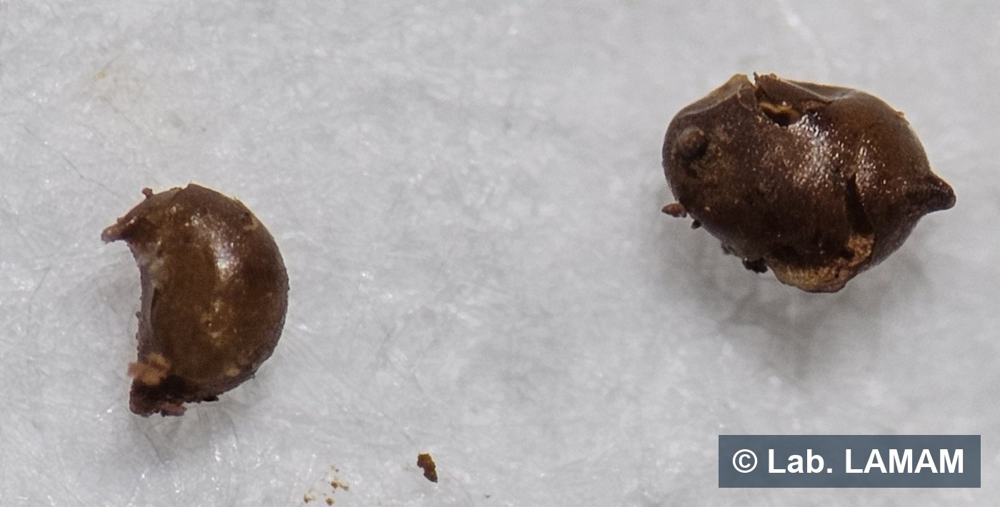
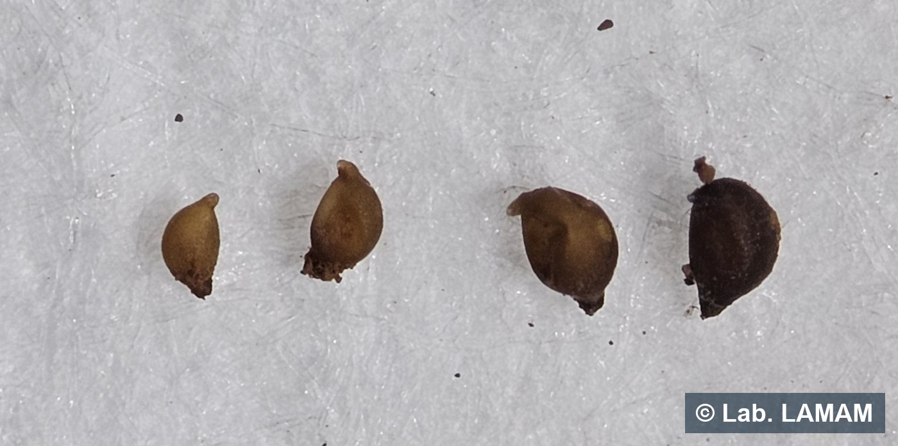
Ao estereomicroscópio: (1) forma/turgidez: o viável é globular e cheio, o inviável colapsa e achata; (2) cor é só indício: o escurecimento é o envelhecimento da cutícula, e um cisto marrom pode ainda estar cheio de ovos; (3) esmagamento é o critério definitivo: rompe-se o cisto e checa-se o conteúdo: ovos íntegros = viável; cavidade vazia = inviável.
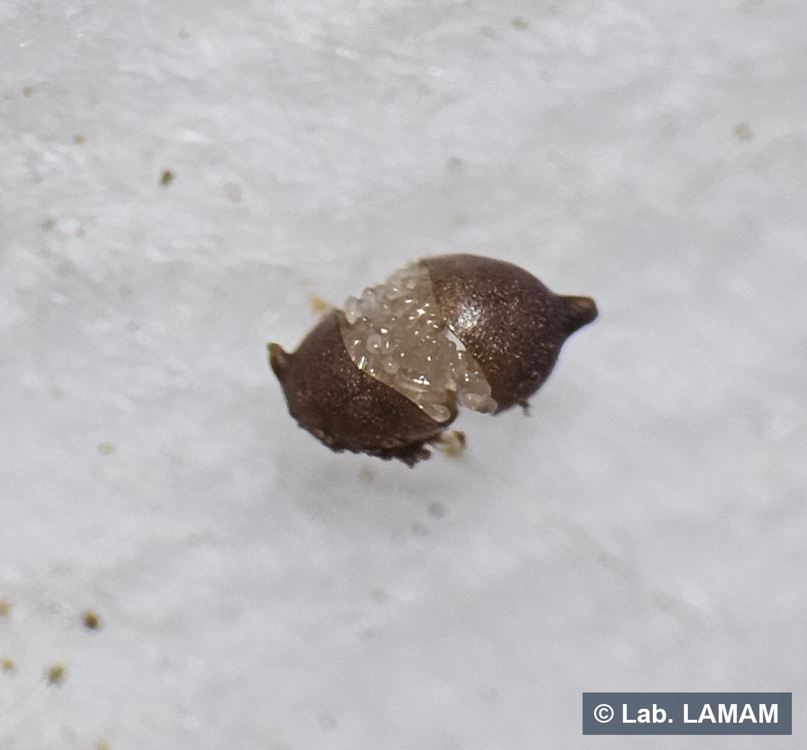
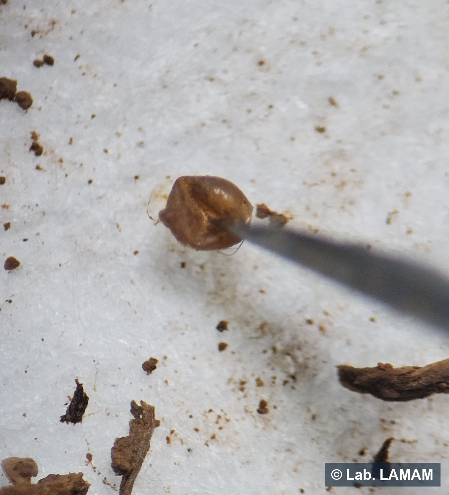
A rotina identifica por gênero. A PCR (espécie) entra quando o manejo depende dela: sobretudo para separar as espécies de Meloidogyne, já que a escolha de cultivar/porta-enxerto resistente é espécie-específica (soja, algodão, café, cana). Para o café, veja o tópico específico sobre galhas e PCR.
Cada cultura tem sua própria tabela de semáforo, na unidade do laudo. Compare o número da sua amostra com a faixa da cultura correspondente. Baixo e médio são orientativos; a faixa alta (“dano”) vem de estudo publicado (fonte no detalhe técnico de cada cultura).
Contagem no seu laudo (por 200 cm³ de solo). A faixa Alto é ancorada em dano publicado; Baixo e Médio são leitura orientativa do LAMAM. classificação orientativa
| Nematoide | Baixo | Médio atenção |
Alto dano provável |
O que observar |
|---|---|---|---|---|
| Cisto Heterodera glycines | até 5cistos/200 cm³ | 5 a 10cistos/200 cm³ | acima de 10cistos/200 cm³ | Contar cistos viáveis (com ovos). 10 cistos viáveis/200 cm³ já custaram cerca de 16% de perda, e em veranico até 1 cisto pesa. |
| Galhas Meloidogyne incognita | até 100J2/200 cm³ | 100 a 200J2/200 cm³ | acima de 200J2/200 cm³ | Plantas menores em reboleiras, com galhas nas raízes. Piora em solo arenoso; em solo mais argiloso o limiar é maior. |
| Lesões Pratylenchus brachyurus | até 100nematoides/200 cm³ | 100 a 200nematoides/200 cm³ | acima de 200nematoides/200 cm³ | O mais comum no Cerrado. Raiz com lesões escuras; reboleiras de plantas fracas. Avalie também a lesão na raiz, não só o solo. |
| Reniforme Rotylenchulus reniformis | sem faixa nacional | acima de 2.000nematoides/200 cm³ | Menos comum em soja de MG. Não use o limite do algodão: em soja o risco vem com população bem maior. | |
Contagem por 200 cm³ de solo, no plantio. classificação orientativa
| Nematoide | Baixo | Médio atenção |
Alto dano provável |
O que observar |
|---|---|---|---|---|
| Lesões Pratylenchus zeae | até 100nematoides/200 cm³ | 100 a 200nematoides/200 cm³ | acima de 200nematoides/200 cm³ | Um dos que mais causam perda no milho. No Alto, vale planejar rotação com plantas não hospedeiras. |
| Galhas Meloidogyne incognita | até 100J2/200 cm³ | 100 a 200J2/200 cm³ | acima de 200J2/200 cm³ | Cada 200 J2/200 cm³ correspondem a 2 a 7% de grãos a menos, conforme o ensaio da colheita (Bowen et al., 2008). |
| Galhas Meloidogyne javanica | sem faixa | A literatura registra danos pouco expressivos e boa parte dos híbridos brasileiros como resistentes; a resposta varia com a cultivar e o solo, e por isso a população merece acompanhamento. | ||
Contagem por 200 cm³ de solo. classificação orientativa
| Nematoide | Baixo | Médio atenção |
Alto dano provável |
O que observar |
|---|---|---|---|---|
| Galhas Meloidogyne incognita | sem faixa | a partir de 5ovos+J2/200 cm³ | O dano começa com pouquíssimo nematoide. Em cultivar suscetível, trate população baixa já como risco. | |
Contagem por 200 cm³ de solo. Cuidado: em café os números são os menos certos da literatura, e lavoura velha sofre com bem menos nematoide. classificação orientativa
| Nematoide | Baixo | Médio atenção |
Alto dano provável |
O que observar |
|---|---|---|---|---|
| Galhas Meloidogyne exigua | até 20J2/200 cm³ | 20 a 80J2/200 cm³ | acima de 80J2/200 cm³ | Em lavoura com mais de 5 anos, trate qualquer detecção como atenção: ela sofre com população muito baixa. |
| Galhas Meloidogyne paranaensis | presença | É a mais agressiva por planta: onde entra, derruba a lavoura. A presença já é o alerta, não espere o número subir. | ||
| Lesões Pratylenchus coffeae | presença | Em ensaio controlado, o cafeeiro reduziu o crescimento já na menor densidade testada, por isso a detecção, por si só, conta como alerta. | ||
Contagem por 200 cm³ de solo. classificação orientativa
| Nematoide | Baixo | Médio atenção |
Alto dano provável |
O que observar |
|---|---|---|---|---|
| Galhas Meloidogyne incognita | até 50J2/200 cm³ | 50 a 100J2/200 cm³ | acima de 100J2/200 cm³ | Reboleiras de plantas fracas, raiz com galhas. Costuma vir junto com outros. |
| Reniforme Rotylenchulus reniformis | até 300nematoides/200 cm³ | 300 a 600nematoides/200 cm³ | acima de 600nematoides/200 cm³ | Concentra-se mais fundo (20 a 40 cm): coletar só a camada de cima subestima. Comum em MT. |
| Lesões Pratylenchus brachyurus | sem faixa | Em campo, a densidade não prediz a perda. O algodão tolera, mas multiplica o nematoide para a cultura seguinte. Acompanhe pela raiz e pelo histórico. | ||
Em cana o mais informativo é a contagem na raiz (por grama), aos cerca de 6 meses, não o solo do plantio. classificação orientativa
| Nematoide | Baixo | Médio atenção |
Alto dano provável |
O que observar |
|---|---|---|---|---|
| Lesões Pratylenchus zeae | até 50nematoides/g de raiz | 50 a 100nematoides/g de raiz | acima de 100nematoides/g de raiz | Em variedade suscetível, a partir do Médio já pode reduzir a produção. |
| Galhas Meloidogyne | sem faixa | Em campo, sob infestação natural, a perda chegou a 22% em cultivar suscetível. Os ensaios mediram a perda, sem estabelecer um valor de corte de contagem: em variedade suscetível, população expressiva indica risco. | ||
Galhas (Meloidogyne incognita), por 200 cm³ de solo. A tabela traz um único valor por cultura: o ponto em que o dano começa. classificação orientativa
| Cultura | Nematoide | Dano começa a partir de | O que observar |
|---|---|---|---|
| Tomate | Meloidogyne incognita | 180J2/200 cm³ | a mais tolerante do grupo |
| Pimentão | Meloidogyne incognita | 80J2/200 cm³ | |
| Berinjela | Meloidogyne incognita | 11ovos+J2/200 cm³ | muito sensível |
| Melão / melancia / abobrinha | Meloidogyne incognita | 3 a 11J2/200 cm³ | sensíveis |
| Pepino | Meloidogyne incognita | presença | o limite é tão baixo (abaixo do que o laudo detecta) que qualquer detecção já preocupa |
| Cenoura | Meloidogyne incognita | presença | o dano é de QUALIDADE (raiz bifurcada, com galhas, sem valor comercial) e começa em densidade no piso de detecção do laudo |
Atenção em citros: as duas referências abaixo contam estágios diferentes do nematoide, não some uma com a outra. classificação orientativa
| Cultura | Nematoide | Leitura | O que observar |
|---|---|---|---|
| Citros | Tylenchulus semipenetrans | acima de 1.400fêmeas/g de raiz | População elevada (referência da Califórnia). É o principal nematoide dos citros, causa o “declínio lento”. |
| Citros | Tylenchulus semipenetrans | acima de 4.000juvenis/g de raiz | Associado a declínio (referência de Israel). Conta juvenis, estágio diferente das fêmeas acima. |
| Citros | Pratylenchus jaehni | presença | É o nematoide-das-lesões dos citros no Brasil. Trate a detecção como alerta. |
| Goiaba | Meloidogyne enterolobii | presença | É a espécie mais agressiva. Derrubou a goiabicultura de regiões inteiras. Não espere população alta: a presença já é o risco. |
| Banana | Radopholus similis | acima de 25R. similis/g de raiz | Em banana o laudo útil é o de RAIZ, não o de solo. Causa o tombamento da bananeira. |
| Banana | Meloidogyne | sem faixa | Provoca deformação e engrossamento das raízes, com galhas ocasionais nas radicelas. População expressiva indica risco. |
| Banana | Helicotylenchus | sem faixa | Costuma aparecer em número alto no laudo, mas seu dano por indivíduo é menos estabelecido. Não decidir só por ele, nem ignorá-lo. |
| Maracujá | Meloidogyne / Rotylenchulus | sem faixa | Em levantamento de pomares de maracujá em declínio (DF/MG/GO), galhas apareceram em quase metade das amostras. O trabalho mediu prevalência, não dano: leia junto com sintoma e histórico. |
Contagem por grama de solo (pré-semeadura). Atenção à unidade: a referência de trigo é australiana e conta por grama de solo, não por 200 cm³ como as demais tabelas. classificação orientativa
| Nematoide | Leitura | O que observar |
|---|---|---|
| Trigo Pratylenchus thornei | 150 a 250nematoides/g de solo25 a 28% de perda | A relação medida é contínua: a produção cai junto com a população desde as densidades mais baixas avaliadas. Cultivar tolerante pesa muito. (dado da Austrália) |
| Capim (para Pratylenchus brachyurus) | Multiplica o nematoide? | Uso em área infestada |
|---|---|---|
| Panicum 'Tanzânia', 'Mombaça'; capim 'Mulato' | multiplica muito | evitar em área infestada, aumenta a população |
| Brachiaria 'Marandu', decumbens | multiplica | hospedeira, não limpa a área |
| B. dictyoneura | multiplica pouco | o menor risco, mas não elimina o nematoide |
Importante: nos ensaios de hospedabilidade, todas essas forrageiras multiplicaram o nematoide em algum grau; a diferença está em quanto. classificação orientativa
O que a PCR responde. A contagem do laudo identifica o nematoide até o gênero: Meloidogyne, Pratylenchus, Rotylenchulus e assim por diante. A PCR vai um passo adiante e identifica a espécie. É uma análise qualitativa: responde qual espécie está presente na amostra, e não quantos indivíduos existem. No LAMAM, é realizada principalmente para espécies de Meloidogyne.
Por que isso muda a decisão. Dentro de um mesmo gênero, as espécies diferem em agressividade, em faixa de hospedeiros e na reação das cultivares. Resistência de cultivar e de porta-enxerto é espécie-específica, e a mesma planta de rotação pode ser hospedeira de uma espécie e não hospedeira de outra. Por isso a PCR não substitui a contagem: as duas se completam: a contagem diz quanto, a PCR diz qual.
Que material serve para a análise.
| Material | Origem | Observação |
|---|---|---|
| Fêmeas material desejável | Extraídas de raízes com galhas | É a via preferencial: a fêmea, retirada do interior da galha, fornece material íntegro e abundante para a extração de DNA. |
| Juvenis (J2) alternativa | Recuperados da amostra de solo | Quando não há raiz com galha, a identificação também pode ser feita a partir dos juvenis extraídos do solo. |
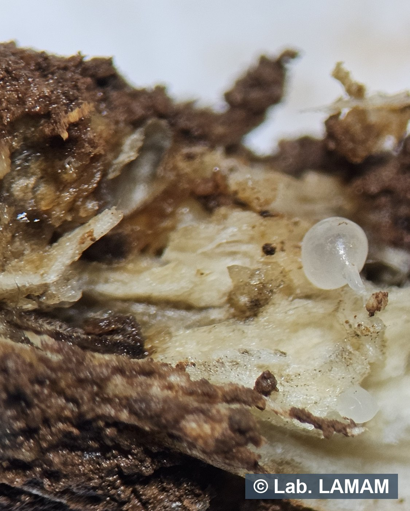
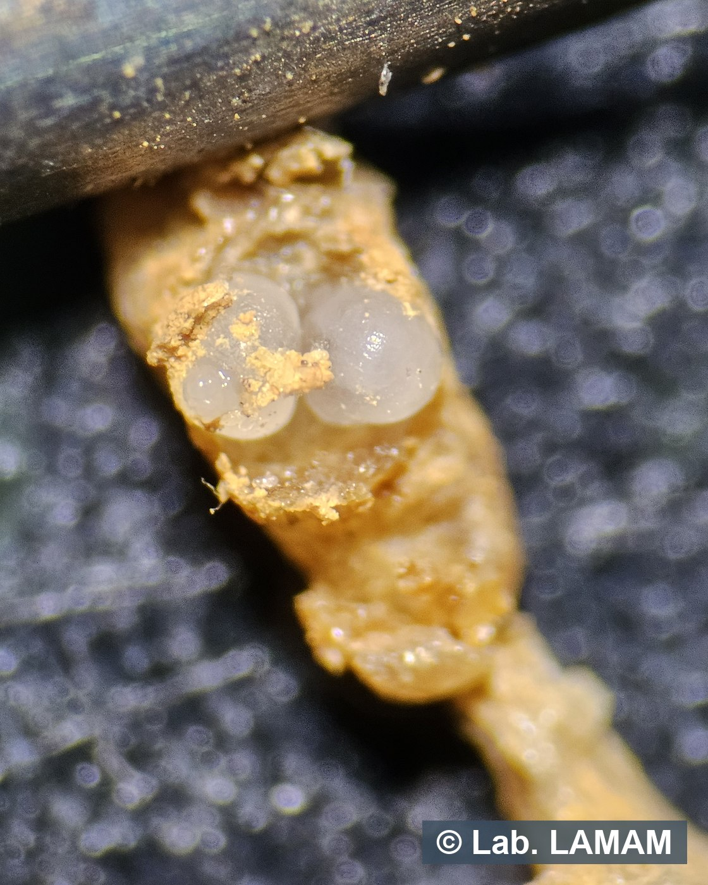
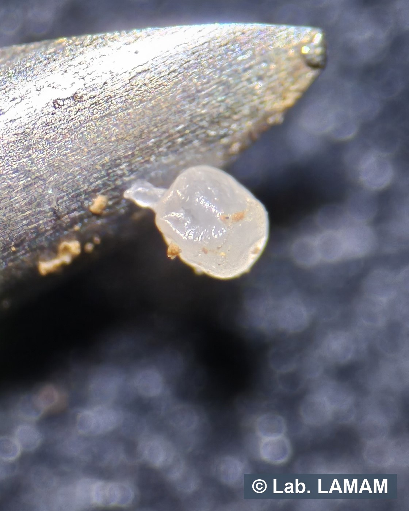
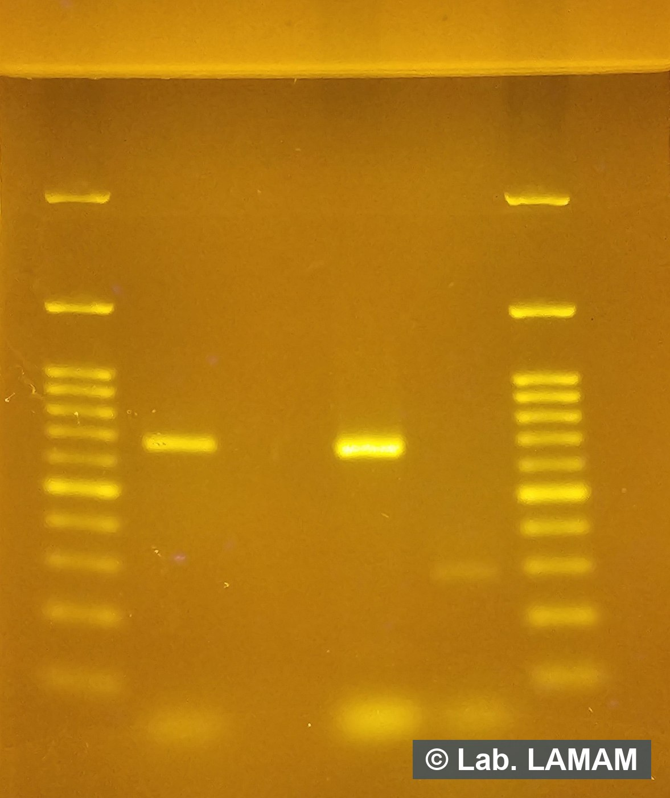
O cafeeiro é parasitado principalmente por Meloidogyne (nematoides das galhas): M. exigua é a mais disseminada no Brasil, enquanto M. paranaensis e M. incognita são as mais agressivas.
Na raiz, o sintoma muda conforme a espécie, e é isso que define o que coletar. M. exigua parasita as radicelas e forma as galhas clássicas, pequenas e arredondadas, em série ao longo da raiz fina. Já M. paranaensis e M. incognita penetram em raízes mais grossas, e o sintoma característico é a cortiça: o córtex engrossa, fendilha e sofre descorticamento, desprendendo-se em placas e expondo o tecido interno, com poucas ou nenhuma galha nítida.
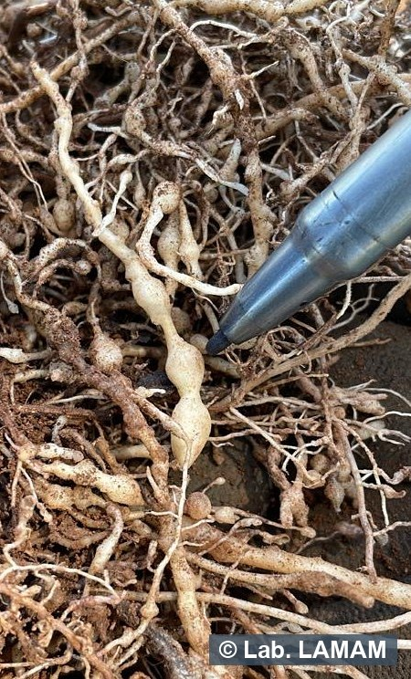
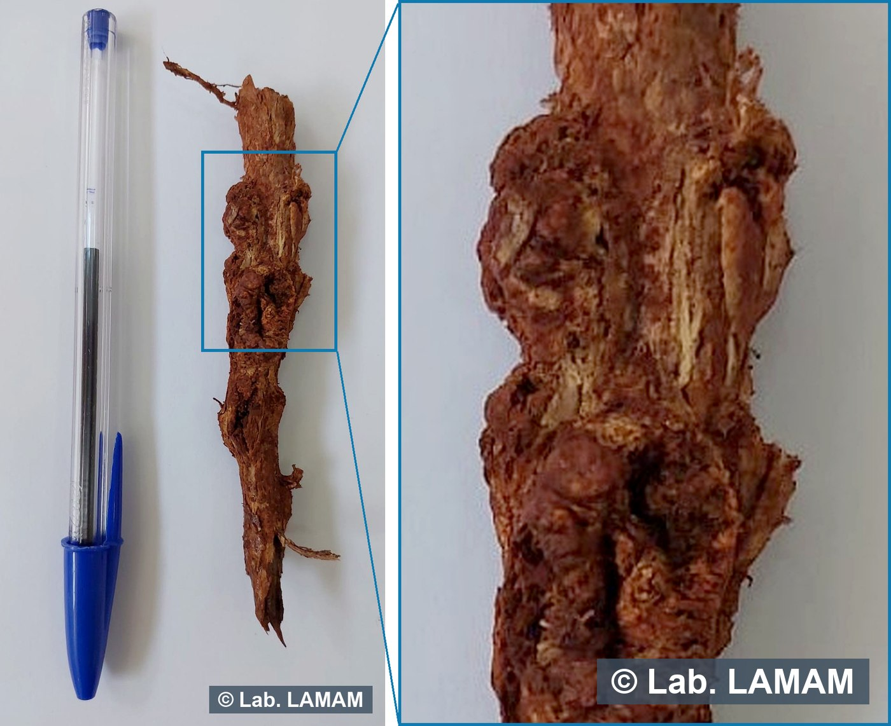
Na parte aérea, o parasitismo se traduz em amarelecimento e desfolha intensa, em reboleiras de plantas de menor porte e em declínio. Vale percorrer a lavoura e registrar essas manchas antes de coletar.
Por que a espécie importa no café. O porta-enxerto ‘Apoatã IAC 2258’ resiste a M. exigua, M. incognita e M. paranaensis, mas é propagado por semente (a Coffea canephora é de fecundação cruzada) e, por isso, segrega de 10 a 15% de plantas suscetíveis: parte do talhão enxertado falha. Além disso, já há populações de M. paranaensis com virulência sobre genótipos resistentes. Saber qual é a espécie por PCR orienta a escolha do porta-enxerto e do manejo; a contagem por gênero, isoladamente, não resolve essa decisão no café.
Cada amostra reúne, aproximadamente, 500 ml de solo + 50 g de raízes (radicelas), de pelo menos 20 subamostras por talhão de até 100 ha. Use as fotos abaixo como referência visual: elas dispensam a balança no campo.
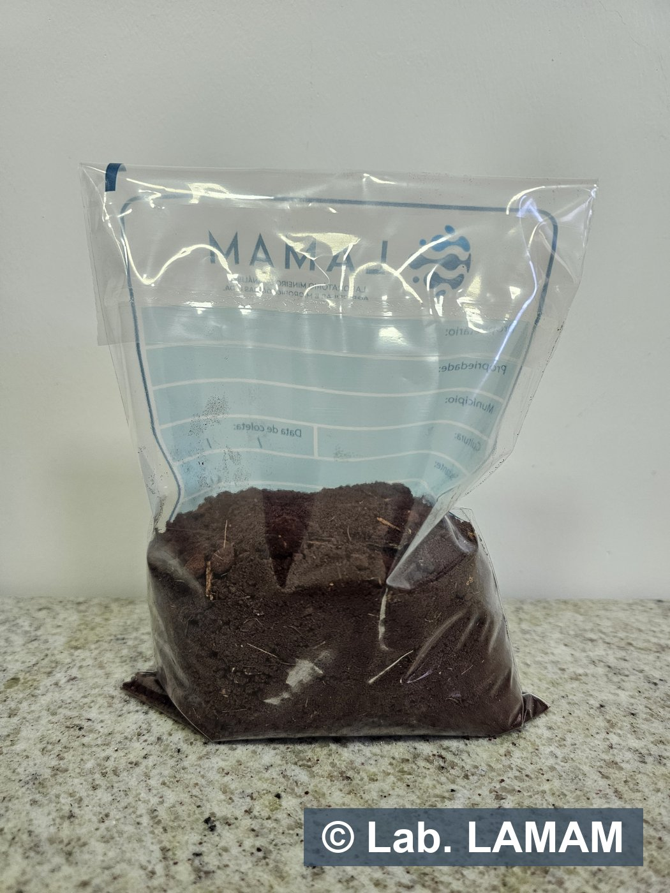
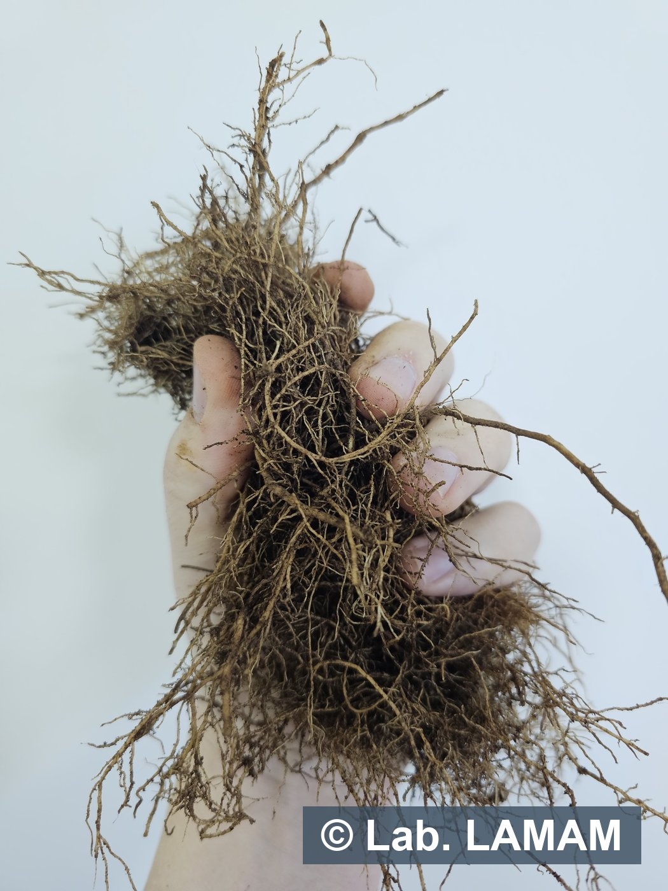
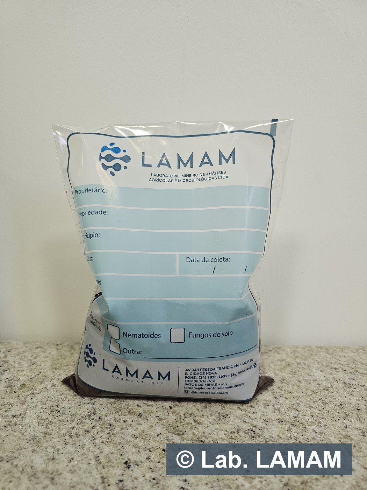
Os números desta página vêm de artigos científicos, teses, boletins técnicos e publicações de instituições de pesquisa.